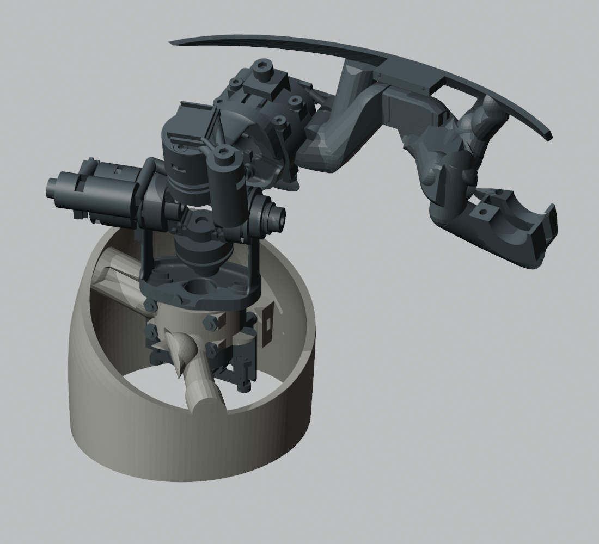
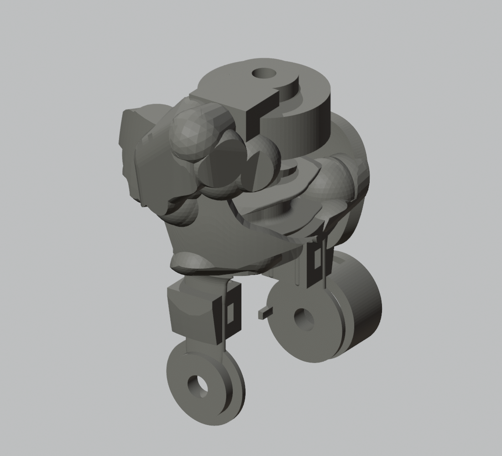
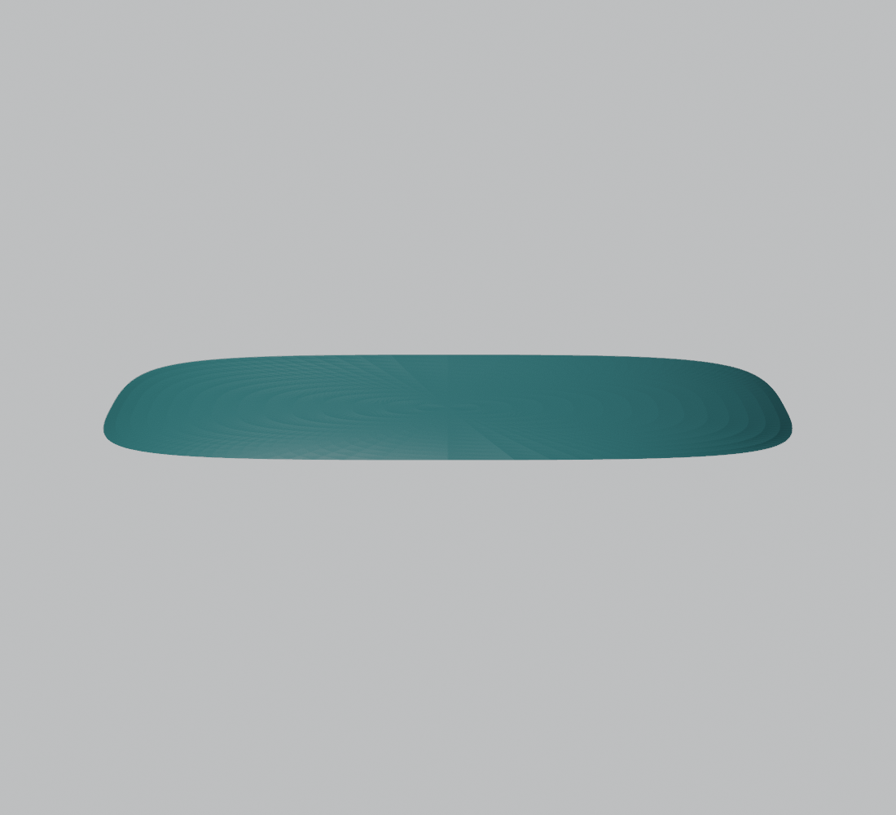

POSEDOLL LAB / O23F / 局部复核
大腿连接、小臂凸起与骨盆对称性
以下保留 O23F 当时的几何与诊断。后续修订见 O23G 新旧对照与全身检查。
1. 大腿连接处
重新检查默认 A 站姿和中立姿态：左右大腿结构件与独立髋部零件未检出实体穿透。连接杆、安装台和外壁属于同一个打印结构件，连接处的材料相互融合。图中浅色为大腿结构，深色为髋部机构与骨盆结构；图片为局部截取。
 左大腿近髋连接，前上方观察
左大腿近髋连接，前上方观察
右大腿近髋连接，前上方观察这是实体相交复核，不是装配公差或实物强度确认。
2. 小臂内侧的球状凸起
这些凸起属于连接筋和安装端的圆头加厚。生成连接时采用球端圆柱，局部扩宽又保留了旧结构的一部分表面，形成了连续的球状鼓包。它们不是传感器，也不是布线扣。真正的布线座是带穿带槽的块状结构。
这些圆球的外形并非功能要求。后续应把所需承力截面整理成少量连续、圆滑的筋和安装台，不能仅凭“实体连通”就接受这种外观。
 左小臂实际结构件
左小臂实际结构件
右小臂实际结构件；下方带槽块体为布线固定座3. 骨盆为什么看起来不对称
后侧护片本身按镜像建立，数值复核也对称。但与它一体的连接杆、腰部安装端、左右髋安装座并没有镜像布置，因此完整零件的可见轮廓确实不对称。默认 A 站姿与中立姿态的骨盆变换相同，这里的差异不能归因于姿态。
上一轮的对称检查只覆盖了单独外壁曲面，范围过窄。应将外壁及外露连接结构一并纳入外观检查；机械接口的必要差异仍需保留。

单独的后侧外壁：对称 完整骨盆结构：外露连接杆和安装座不对称
完整骨盆结构：外露连接杆和安装座不对称查看 O23F 历史三维预览 · 原始复核数据
几何版本：47c788b92b3b43d5d2cc2d55be1483198d99cd313e275613233daa0848e6a752